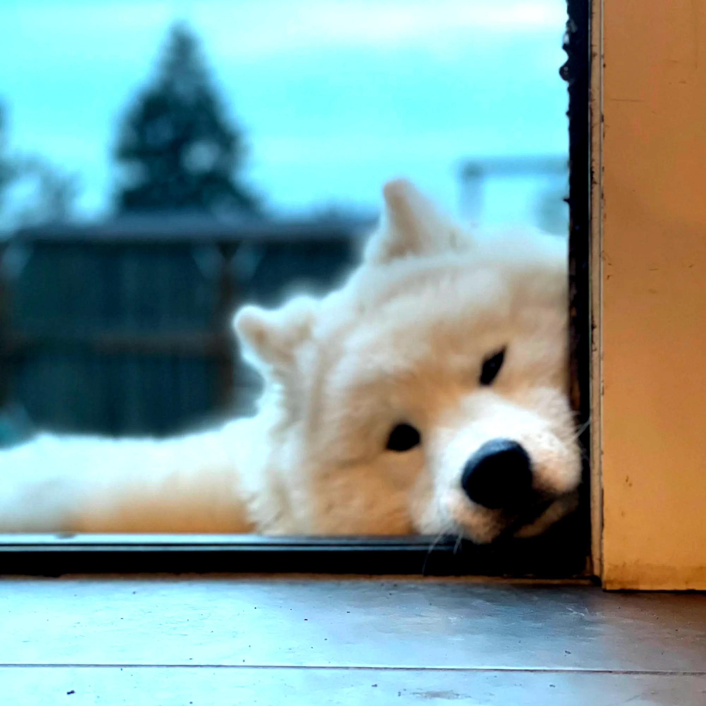

REFRACT
Photography Analysis & Enhancement
IMG_6001.jpg
Multi-LLM Analysis
71.5/100
Consensus Score
gemini
68.0/100
The image has a cute subject, but lacks sharpness and contrast. Improving these aspects will make the dog stand out more.
- increase contrast by 15%
- sharpen the image by 10%
- reduce highlights by 10%
openai
75.0/100
The photograph has a charming subject and captures a candid moment. Improving brightness and sharpness will enhance visual appeal and crop adjustments will balance the composition.
- increase brightness by 15%
- sharpen the dog's face for more clarity
- crop to include more of the dog's body on the left side
anthropic
Failed
Analysis failed: Error code: 400 - {'type': 'error', 'error': {'type': 'invalid_request_error', 'message': 'messages.0.content.0.image.source.base64.data: Image does not match the provided media type image/jpeg'}, 'request_id': 'req_011CWmvtjLr3tqCfscxoP6rX'}
Combined Improvements Applied:
- increase contrast by 15%
- sharpen the image by 10%
- reduce highlights by 10%
- increase brightness by 15%
- sharpen the dog's face for more clarity
- crop to include more of the dog's body on the left side
Before & After Comparison
Original

Enhanced

Side-by-Side